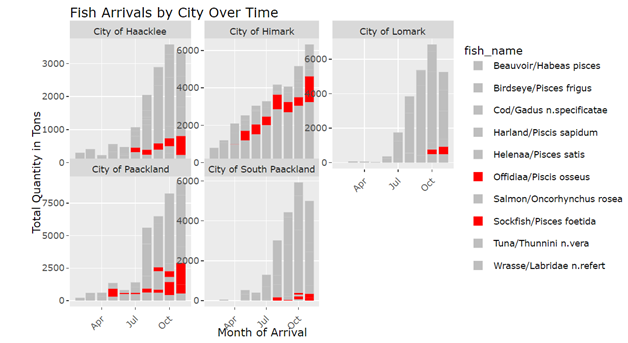
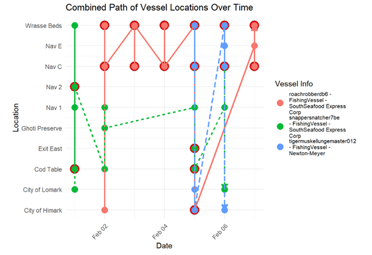
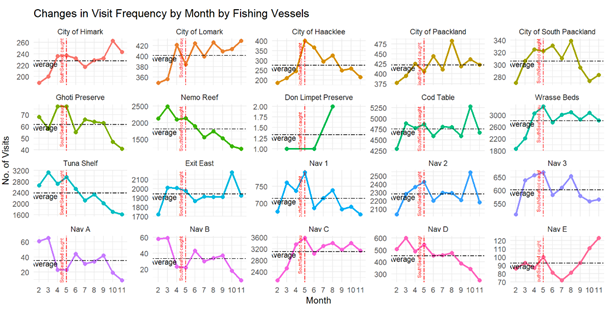
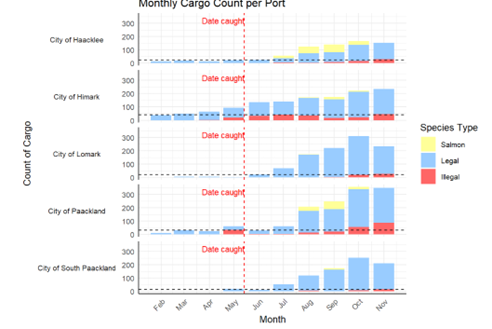
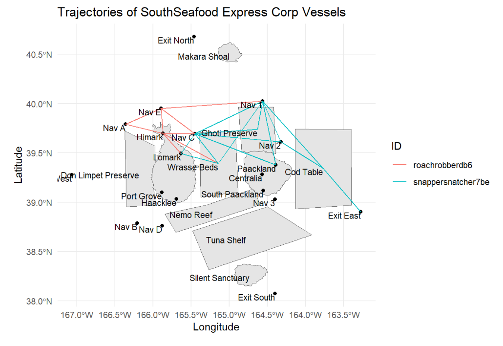
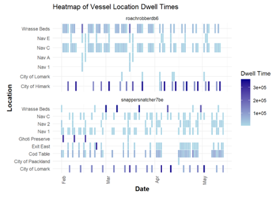

Meeting Minute #7
Date: 15 June 2024
Time: 4pm to 5pm
Location: Physical, after class meeting.
Attendees: Arya Siahaan, Seng Jing Yi, Thet Myat Noe
Agenda:
- Discussion on findings from Take Home Assignment 3
- Discussion on charts to include for Project Shiny
- Clarification with Prof Kam
Meeting Notes:
Reviewing the learnings from our fellow classmates
- Learning 1: Jaya’s “Fish Arrival by City over Time”

Possibility of transfer of illegal fish species from one port to another delivery port after South Seafood Express Corp was flagged for illegal fishing.
Decline in illegal fish species for “City of Paackland” in May and shift to “City of Himark” or “City of Haacklee”.
- Learning 2: Jaya’s & Wei Peng’s Combined Path of Vessel Locations over Time

Considering possibility of transhipment arising from overlap of transponder ping
By identifying vessels at the same location on the same date for possibility of transfer.
- Learning 3: Rydia’s Changes in Visit Frequency by Month by Fishing Vessels

Plot of visit frequency of fishing vessels by month which showed decline in visit aft South Seafood was caught, while other cities (e.g., City of Lomark) showed an increase.
Further investigation where plot shows that frequency visit to Nav C has decreased after South Seafood Express was caught.
Discussion on plots to include for the project:
The team circled back to the Mini-challenge 2 questions and summarised the intended visualizations for the respective questions.
- Sub-question 1a: Develop a visualization system to associate vessels with their probable cargos.
Filter:
Transaction date to filter scope of cargo
Cargo of specific fish species
Specific vessels
Aesthetics:
Grey out links where it is a poor match
Cargo coloured red where it belongs to illegal fish species.
- Sub-question 1b: Which vessels deliver which products and when?
For each vessel, return the details of the associated cargo, including tx_date and fish_species for that respective cargoes.
- Sub-question 1c: What are the seasonal trends and anomalies in the port exit records?

Plot of calendar heat map
- Filter by port
- Filter by fish species of interest
Analysis to include trendline comparing month-on-month change
- Sub-question 2a: Develop visualizations that illustrate the inappropriate behavior of SouthSeafood Express Corp vessels.

Plot the path taken by South Seafood Express Corp to observe areas where South Seafood Vessels may have trespass.
- Sub-question 2b: How do their movement and catch contents compare to other fishing vessels? .
Include map and interactive filter by fish species to show probable fishing location and dwell time of vessels at each location.
Include parallel coordinate plot with (x axis as location, y as median dwell time, each vessel drawing a line)
- Sub-question 2c: Develop a visualization system to associate vessels with their probable cargoes.

Interactive plot where the median dwell time spent by each vessel is highlighted by circle.
Compare the median dwell time of this vessel with other vessel to see if this vessel is overstaying its visit.
Compare the transponder ping record for each vessel across regions it visited over the period and see any difference per month.
- Sub-question 2d: How many different types of suspicious behaviors are observed? Use visual evidence to justify your conclusions.
Suspicious behaviour include:
- Overstaying in ecological preserves
- Catch of illegal fish species
- Repeatedly catching top 90% of cargo (possibility of overfishing)
- Sub-question 3: To support further Fisheye investigations, develop visual analytics workflows that allow you to discover other vessels engaging in behaviors similar to SouthSeafood Express Corp’s illegal activities? Provide visual evidence of the similarities.
Visualisations will be taken from Q1 and Q2 to identify common groups of illegal fishing behaviour.
- Sub-question 4a: How did fishing activity change after SouthSeafood Express Corp was caught?
Visualisation will be taken from Q1 and Q2 to include filter on time parameter to compare the before and after May 2035.
- Sub-question 4b: What new behaviors in the Oceanus commercial fishing community are most suspicious and why?
Identify any drastic change immediately in June (post May) and subsequent month.
Area of investigation include:
- Diversion of vessel path from where South Seafood was at. (Port, Fishing Ground, Ecological Preserve)
- Vessels that have remained at the port in June and no activity in June.
- Change in cargo quantity and fish species caught
Areas to note:
- When comparing with other fishing vessel and cargo vessel, consider their capacity.
- When using the mapped records of vessel to cargo, take note of the denominator to prevent duplicate records. (e.g., vessel_id, or cargo_id).
- For interactive plot, it is possible to call ggplotly within Shiny.
- To have coordinated link view, introduce the common ID to have a common data table and filters applied. https://rstudio.github.io/crosstalk/shiny.html
Action Items:
| Action items | Owner(s) | Deadline |
|---|---|---|
| Plot the r Shiny plots for the respective sub-questions | Arya, Jing Yi, Myat | 22 June 2024 |
| Summarise the insights derived from exploring the r Shiny plots. | Arya, Jing Yi, Myat | 22 June 2024 |
Agenda for Next Meeting:
Review of Shiny Plot Progress
Review of possible observations arising from Shiny Plots (more granular deep dive)